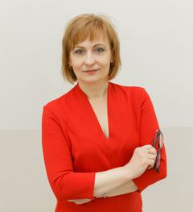
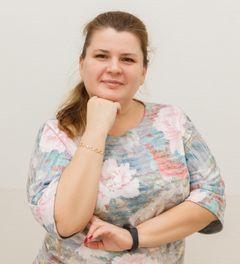
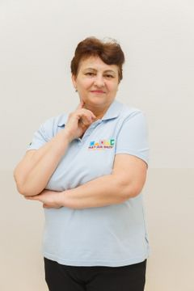
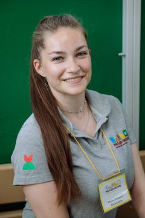
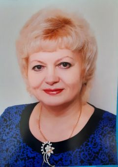

Сведения об образовательной организации
Кудрово
ЧУ ДО «Маленькая страна Кудрово»
Основные сведения
| Полное наименование образовательной организации |
ЧАСТНОЕ УЧРЕЖДЕНИЕ ДОШКОЛЬНОГО ОБРАЗОВАНИЯ «Маленькая страна Кудрово»
|
| Сокращенное наименование образовательной организации |
ЧУ ДО «Маленькая страна Кудрово»
|
| Дата создания образовательной организации |
27
марта
2017 г.
|
| Адрес местонахождения образовательной организации | Всеволожский район, г. Кудрово, Европейский проспект, дом 13, кор. 4 |
| Филиалы образовательной организации | Отсутствуют |
| Представительства образовательной организации | Отсутствуют |
| Режим, график работы |
|
| Контактные телефоны | +7 (962) 717-27-24 |
Сведения о каждом учредителе образовательной организации
| Наименование учредителя образовательной организации | Юридический адрес учредителя | Контактный телефон учредителя | Адрес электронной почты учредителя |
|---|---|---|---|
| Общество с ограниченной ответственностью «Мал да велик» | Россия, Ленинградская область, Всеволожский район, г. Кудрово, Европейский проспект, д. 13, кор. 4 | +7 (962) 717-27-24 | ms.kudrovo@mail.ru |
Лицензия на осуществление образовательной деятельности
Электронная почта сада ms.kudrovo@mail.ru
Структура и органы управления
Генеральный директор – Кащеев Денис Анатольевич
Коллегиальные органы управления Учреждения:
- Общее собрание работников
- Педагогический совет
Документы, утверждающие структуру организации
Документы
Устав образовательной организации
Правила внутреннего распорядка обучающихся
Правила внутреннего трудового распорядка
Отчет о результатах самообследования
-
Отчет о результатах самообследования 2024г.pdf (5,5 МБ) (принят 03.04.2025)
Предписания органов, осуществляющих государственный контроль (надзор) в сфере образования, отчеты об исполнении таких предписаний (до подтверждения органом, осуществляющим государственный контроль (надзор) в сфере образования, исполнения предписания или признания его недействительным в установленном законом порядке) (при наличии)
Предписание
Отчет
- Отчетов об исполнении нет
Локальные нормативные акты образовательной организации по основным вопросам организации и осуществления образовательной деятельности, в том числе регламентирующие:
Правила приема обучающихся
Режим занятий обучающихся
Порядок и основания перевода, отчисления и восстановления обучающихся
Локальные нормативные акты образовательной организации
-
Положение о языке .pdf (316 КБ)
2025
-
положение о педагогическом совете (1).pdf (3,3 МБ) (принят 10.04.2025)
Образование
Информация о реализуемых уровнях образования, о формах обучения, нормативных сроках обучения
| Наименование профессии, специальности, направления подготовки, научной специальности | Образовательная программа, направленность, профиль, шифр и наименование научной специальности | Уровень образования | Срок получения образования |
|---|---|---|---|
| дошкольное образование | Основная образовательная программа дошкольного образования | дошкольное образование | 5 лет |
Информация о численности обучающихся по реализуемым образовательным программам за счет бюджетных ассигнований федерального бюджета, бюджетов субъектов Российской Федерации, местных бюджетов и по договорам об образовании за счет средств физических и (или) юридических лиц, в том числе информация о численности обучающихся, являющихся иностранными гражданами, по каждой образовательной программе и каждой профессии, специальности, в том числе научной, направлению подготовки или укрупненной группе профессий, специальностей и направлений подготовки (для профессиональных образовательных программ
Не требуется указывать
Информация о результатах приема по каждой профессии, специальности среднего профессионального образования (при наличии вступительных испытаний), каждому направлению подготовки или специальности высшего образования, каждой научной специальности с различными условиями приема (на места, финансируемые за счет бюджетных ассигнований федерального бюджета, бюджетов субъектов Российской Федерации, местных бюджетов, по договорам об образовании за счет средств физических и (или) юридических лиц) с указанием средней суммы набранных баллов по всем вступительным испытаниям
Не требуется указывать
Информация о результатах перевода, восстановления и отчисления
Не требуется указывать
Информация об образовательных программах
| Наименование профессии, специальности, направления подготовки, научной специальности | Уровень образования | Образовательная программа, направленность, профиль, шифр и наименование научной специальности | Ссылка на описание образовательной программы с приложением ее копии | Ссылка на учебный план | Ссылка на календарный учебный график |
|---|---|---|---|---|---|
| дошкольное образование | дошкольное образование | Основная образовательная программа дошкольного образования | Ссылка | Ссылка | Ссылка |
Основная образовательная программа дошкольного образования
| Образовательная программа, направленность, профиль, шифр и наименование научной специальности | Основная образовательная программа дошкольного образования |
| Наименование профессии, специальности, направления подготовки, научной специальности | дошкольное образование |
| Уровень образования | дошкольное образование |
| Срок получения образования | 5 лет |
Ссылка на описание образовательной программы с приложением ее копии
Ссылка на учебный план
Ссылка на календарный учебный график
Руководство
Руководитель
Кащеев Денис Анатольевич
Занимаемая должность: Генеральный директор
Контактный телефон: +7 (962) 717-27-24
Адрес электронной почты: ms.kudrovo@mail.ru
Заместители
Блинова Лилия Анатольевна
Занимаемая должность: Управляющий
Контактный телефон: +7 (962) 717-27-24

Краснова Елена Юрьевна
Занимаемая должность: Главный бухгалтер
Контактный телефон: +7 (965) 024-66-86

Педагогический состав
Малютина Елена НиколаевнаВоспитатель
| Занимаемая должность | Воспитатель |
| Преподаваемые учебные предметы, курсы, дисциплины (модули) | Воспитатель |
| Уровень профессионального образования, квалификация | дошкольное образование |
| Наименование направления подготовки и (или) специальности, в том числе научной | " Дошкольное образование" |
| Сведения о продолжительности опыта (лет) работы в профессиональной сфере | 3 года |
Самарина Анастасия СергеевнаВоспитатель
| Занимаемая должность | Воспитатель |
| Преподаваемые учебные предметы, курсы, дисциплины (модули) | Воспитатель |
| Уровень профессионального образования, квалификация | дошкольное образование |
| Наименование направления подготовки и (или) специальности, в том числе научной | воспитатель детей дошкольного возраста |
| Сведения о продолжительности опыта (лет) работы в профессиональной сфере | 5 лет |
Коновалова Татьяна ИвановнаВоспитатель

| Занимаемая должность | Воспитатель |
| Преподаваемые учебные предметы, курсы, дисциплины (модули) | Воспитатель |
| Уровень профессионального образования, квалификация | дошкольное образование |
| Наименование направления подготовки и (или) специальности, в том числе научной | «Воспитатель детского сада» |
| Сведения о продолжительности опыта (лет) работы в профессиональной сфере | 42 года |
Веденеева Мария ИгоревнаВоспитатель

| Занимаемая должность | Воспитатель |
| Преподаваемые учебные предметы, курсы, дисциплины (модули) | Воспитатель |
| Уровень профессионального образования, квалификация | дошкольное образование |
| Наименование направления подготовки и (или) специальности, в том числе научной | «Бакалавр, психолого-педагогическое образование» |
| Сведения о профессиональной переподготовке |
2022 г. – Профессиональная переподготовка, 260ч., «Воспитатель детей дошкольного возраста» |
| Сведения о продолжительности опыта (лет) работы в профессиональной сфере | 2 года |
Чайка Анна СергеевнаВоспитатель
| Занимаемая должность | Воспитатель |
| Преподаваемые учебные предметы, курсы, дисциплины (модули) | Воспитатель |
| Уровень профессионального образования, квалификация | дошкольное образование |
| Наименование направления подготовки и (или) специальности, в том числе научной | «Педагогика» |
| Сведения о продолжительности опыта (лет) работы в профессиональной сфере | 5 лет |
Хрячкова Анжела Сергеевнаметодист
| Занимаемая должность | методист |
| Преподаваемые учебные предметы, курсы, дисциплины (модули) | Воспитатель |
| Уровень профессионального образования, квалификация | дошкольное образование |
| Наименование направления подготовки и (или) специальности, в том числе научной | «Воспитатель детей дошкольного возраста» |
| Сведения о профессиональной переподготовке |
2021 г. - КПК, 72 ч., «Инновационные подходы к организации воспитательно – образовательного процесса в условиях реализации ФГОС ДО» |
| Сведения о продолжительности опыта (лет) работы в профессиональной сфере | 22 года |
Карелина Татьяна ИвановнаВоспитатель

| Занимаемая должность | Воспитатель |
| Преподаваемые учебные предметы, курсы, дисциплины (модули) | Воспитатель |
| Уровень профессионального образования, квалификация | дошкольное образование |
| Наименование направления подготовки и (или) специальности, в том числе научной | «Воспитатель детского сада» |
| Сведения о профессиональной переподготовке |
2019 г. - КПК, 16 ч., «Внедрение ФГОС ДО» |
| Сведения о продолжительности опыта (лет) работы в профессиональной сфере | 33 года |
Афанасьева Наталья НиколаевнаВоспитатель
| Занимаемая должность | Воспитатель |
| Преподаваемые учебные предметы, курсы, дисциплины (модули) | Воспитатель |
| Уровень профессионального образования, квалификация | дошкольное образование |
| Наименование направления подготовки и (или) специальности, в том числе научной | «Преподаватель дошкольной педагогики и психологии, логопед» |
| Сведения о профессиональной переподготовке |
2021 г. - КПК, 72 ч., «Инновационные подходы к организации воспитательно-образовательного процесса в условиях реализации ФГОС ДО» |
| Сведения о продолжительности опыта (лет) работы в профессиональной сфере | 5 лет |
Нагорная Оксана Михайловналогопед
| Занимаемая должность | логопед |
| Преподаваемые учебные предметы, курсы, дисциплины (модули) | учитель – логопед |
| Уровень профессионального образования, квалификация | дошкольное образование |
| Наименование направления подготовки и (или) специальности, в том числе научной | "Логопедия" |
| Сведения о профессиональной переподготовке |
2018г. – Повышение квалификации, 72 ч., «Универсальная система коррекции фонетических нарушений речи у детей»; 2020г. – Повышение квалификации, 16 ч., «Логоритмика в работе логопеда» 2020г. – Повышение квалификации, 72 ч., «Навигация, консультирование родителей, воспитывающих детей с разными образовательными потребностями, и оказание им информационно-методической помощи» 2021г. - Повышение квалификации, 72 ч., «Алалия. Современные подходы к диагностике и коррекции» |
| Сведения о продолжительности опыта (лет) работы в профессиональной сфере | 27 лет |
Сердюк Жанна Валерьевнапедагог английского языка
| Занимаемая должность | педагог английского языка |
| Преподаваемые учебные предметы, курсы, дисциплины (модули) | педагог английского языка |
| Уровень профессионального образования, квалификация | дошкольное образование |
| Наименование направления подготовки и (или) специальности, в том числе научной | «Учитель английского языка" |
| Сведения о продолжительности опыта (лет) работы в профессиональной сфере | 5 лет |
Синицкая Надежда ВикторовнаМузыкальный руководитель
| Занимаемая должность | Музыкальный руководитель |
| Преподаваемые учебные предметы, курсы, дисциплины (модули) | Музыкальное образование |
| Уровень профессионального образования, квалификация | дошкольное образование |
| Наименование направления подготовки и (или) специальности, в том числе научной | "Учитель музыки," |
| Сведения о продолжительности опыта (лет) работы в профессиональной сфере | 16 лет |
Батоболотова Соелма ДашинимаевнаВоспитатель
| Занимаемая должность | Воспитатель |
| Преподаваемые учебные предметы, курсы, дисциплины (модули) | Воспитатель |
| Уровень профессионального образования, квалификация | среднее-профессиональное образование |
| Наименование направления подготовки и (или) специальности, в том числе научной | «Преподаватель в начальных классах» |
| Сведения о профессиональной переподготовке |
2016 г. – КПК, 45 ч., «Подготовка будущих учителей к правозащитной деятельности» 2021 г. - Профессиональная переподготовка, «Теория и методика дошкольного возраста» |
| Сведения о продолжительности опыта (лет) работы в профессиональной сфере | 4 месяца |
Рыбалко Яна ВасильевнаПедагог-психолог
| Занимаемая должность | Педагог-психолог |
| Преподаваемые учебные предметы, курсы, дисциплины (модули) | Педагог-психолог |
| Уровень профессионального образования, квалификация | дошкольное образование |
| Наименование направления подготовки и (или) специальности, в том числе научной | «Педагог-психолог» |
| Сведения о продолжительности опыта (лет) работы в профессиональной сфере | 3 года |
Информация о персональном составе педагогических работников каждой реализуемой образовательной программы
| Наименование профессии, специальности, направления, подготовки | Ссылка на страницу о персональном составе педагогических (научно-педагогических) работников образовательной программы |
|---|---|
| Основная образовательная программа дошкольного образования | Персональный состав педагогических (научно-педагогических) работников образовательной программы «Основная образовательная программа дошкольного образования» |
Персональный состав педагогических (научно-педагогических) работников образовательной программы «Основная образовательная программа дошкольного образования»
| Образовательная программа, направленность, профиль, шифр и наименование научной специальности | Основная образовательная программа дошкольного образования |
| Наименование профессии, специальности, направления подготовки, научной специальности | дошкольное образование |
| Уровень образования | дошкольное образование |
Образовательные стандарты и требования
Федеральный государственный образовательный стандарт дошкольного образования (ФГОС ДО)
-
FGOS-DO-na-17.02.2023.pdf (422 КБ)
-
2025-04-21_12-34-49.png (207 КБ)
Материально-техническое обеспечение. Доступная среда
Детский сад занимает первый и второй этаж жилого дома. Территория детского сада облагорожена (общая площадь – 3400 кв.м.), имеются подъездные пути, дорожки асфальтированы. На территории имеются спортивная площадка (288 кв.м.), участки для 6 групп (общая площадь 3400кв.м.), мини-огород, цветники, хозяйственная зона.
Материально-техническое состояние ДОУ и территории соответствует действующим санитарно-эпидемиологическим требованиям к устройству, содержанию и организации режима работы в дошкольных организациях, правилам пожарной безопасности, требованиям охраны труда.
В учреждении имеются 2 персональных компьютера с выходом в интернет, 5 ноутбуков с выходом в интернет, мультимедийное оборудование, 4 принтера (3 – цветных, 1 – черно - белый). На всей территории детского сада Wi-Fi.
У воспитанников ДОУ нет доступа к информационным системам и информационно - телекоммуникационным сетям.
| Наименование | Количество |
|---|---|
| Количество собственных электронных образовательных и информационных ресурсов | 0 |
| Количество сторонних электронных образовательных и информационных ресурсов | 0 |
| Количество баз данных электронного каталога | 0 |
| Наименование показателя | Общежития | Интернаты |
|---|---|---|
| Количество общежитий/интернатов | 0 | 0 |
| Количество мест | 0 | 0 |
| Количество жилых помещений в общежитии, приспособленных для использования инвалидами и лицами с ограниченными возможностями здоровья | 0 | 0 |
Платные образовательные услуги
Документ о порядке оказания платных образовательных услуг
Образец договора об оказании платных образовательных услуг
Документ об утверждении стоимости обучения по каждой образовательной программе
Документ об установлении размера платы, взимаемой с родителей (законных представителей) за присмотр и уход за детьми
Финансово-хозяйственная деятельность
Объем образовательной деятельности
| за счет бюджетов субъектов Российской Федерации (тыс. руб.) | по договорам об оказании платных образовательных услуг (тыс. руб.) |
|---|---|
| 9 220 624 | 7 415 930 |
Информация о поступлении и расходовании финансовых и материальных средств
| Год | Поступившие финансовые и материальные средства |
|---|---|
2025 |
|
2024 |
|
2023 |
Вакантные места для приёма и перевода
Вакантные места на ноябрь 2026 г.
- Младшая группа №6 (2 - 3 года) - 1 вакантно;
- Младшая группа №5 (3 - 4 лет) - 1 вакантно;
- Средняя группа №3 (4 - 5 лет) - 8 вакантно;
- Старшая группа №4 (5 - 6 лет) - 0 вакантно;
- Старшая группа №1 (5 – 6 лет) - 0 вакантно;
- Подготовительная группа №2 (6 - 7 лет) - 2 вакантно.
Международное сотрудничество
Заключенных и планируемых к заключению договоров с иностранными и международными организациями по вопросам образования и науки нет.
Организация питания
Сведения об условиях питания и охраны здоровья обучающихся
Организация питания воспитанников детского сада осуществляется в соответствии с требованиями СанПина и по утвержденному 10 — дневному меню.
Главной целью по охране труда в детском саду является создание и обеспечение здоровых и безопасных условий труда, сохранение жизни и здоровья воспитанников и работающих в процессе труда, воспитания и организованного отдыха, создание оптимального режима труда обучения и организованного отдыха.
Для обеспечения безопасности воспитанников и сотрудников детского сада установлены:
- охранная сигнализация (тревожная кнопка с выходом на пульт полиции);
- домофон на калитке и входах в группы детского сада;
- СКУД - система во всех помещениях детского сада;
- видеонаблюдение на всей территории ДОУ.
Пожарная безопасность:
- В детском саду установлена автоматическая пожарная сигнализация со звуковым оповещателем;
- Имеются в каждом помещении огнетушители;
- В группах оформлены уголки безопасности для детей и информация для родителей;
- Воспитатели проводят как беседы, так и занятия с детьми на тему пожарной безопасности в детском саду и дома, проходят выставки рисунков;
- 2 раза в год проводятся практические занятия по правилам эвакуации в случае возникновения пожара совместно со специалистами пожарной части.
Антитеррористическая деятельность:
- Проводятся беседы и практические занятия с детьми на нахождение бесхозного предмета и действие в случае возникновения ЧС;
- Проводится ежедневная проверка целостности входных дверей, замков;
- Прогулочные площадки ежедневно проверяются перед прогулкой воспитателями на наличие постороннего предмета;
- В каждой группе имеется информация по действиям в случае ЧС.
Политика обработки персональных данных
г.Кудрово
Адрес: Россия, Ленинградская область, Всеволожский район, г. Кудрово, Европейский проспект, дом 13, кор. 4
телефон: +7 (962) 717-27-24
1. Общие положения
1.1. Политика в отношении обработки персональных данных (далее — Политика) направлена на защиту прав и свобод физических лиц, персональные данные которых обрабатывает Частное учреждение дошкольного образования «Маленькая страна Кудрово» (далее — Оператор).
1.2. Политика разработана в соответствии с п. 2 ч. 1 ст. 18.1 Федерального закона от 27 июля 2006 г. № 152-ФЗ «О персональных данных» (далее — ФЗ «О персональных данных»).
1.3. Политика содержит сведения, подлежащие раскрытию в соответствии с ч. 1 ст. 14 ФЗ «О персональных данных», и является общедоступным документом.
2. Сведения об операторе
2.1. Оператор ведет свою деятельность по адресу Россия, Ленинградская область, Всеволожский район, г. Кудрово, Европейский проспект, дом 13, кор. 4.
3. Сведения об обработке персональных данных
3.1. Оператор обрабатывает персональные данные на законной и справедливой основе для выполнения возложенных законодательством функций, полномочий и обязанностей, осуществления прав и законных интересов Оператора, работников Оператора и третьих лиц.
3.2. Оператор получает персональные данные непосредственно у субъектов персональных данных (далее — ПДн).
3.3. Оператор обрабатывает персональные данные автоматизированным и неавтоматизированным способами, с использованием средств вычислительной техники и без использования таких средств.
3.4. Действия по обработке персональных данных включают сбор, запись, систематизацию, накопление, хранение, уточнение (обновление, изменение), извлечение, использование, передачу (распространение, предоставление, доступ), обезличивание, блокирование, удаление и уничтожение.
4. Обработка персональных данных клиентов
4.1. Оператор обрабатывает персональные данные клиентов в рамках правоотношений с Оператором, урегулированных частью второй Гражданского Кодекса Российской Федерации от 26 января 1996 г. № 14-ФЗ, (далее — клиентов).
4.2. Оператор обрабатывает персональные данные клиентов в целях соблюдения норм законодательства РФ, а также с целью:
- прием обращений и заявок от субъекта ПДн;
- информировать о новых товарах, специальных акциях и предложениях;
- заключение и исполнение условий договора.
4.3. Оператор обрабатывает персональные данные клиентов с их согласия, предоставляемого клиентами и/или их законными представителями путем совершения конклюдентных действий на настоящем интернет-сайте, в том числе, но не ограничиваясь, оформлением заказа, регистрацией в личном кабинете, подпиской на рассылку, в соответствии с настоящей Политикой.
4.4. Оператор обрабатывает персональные данные клиентов не дольше, чем того требуют цели обработки персональных данных, если иное не предусмотрено требованиями законодательства РФ.
4.5. Оператор может обрабатывать следующие персональные данные клиентов:
- Фамилия, имя, отчество;
- Адрес;
- Номер контактного телефона;
- Адрес электронной почты.
4.6. Не осуществляется обработка специальных категорий персональных данных:
- касающихся расовой, национальной принадлежности;
- политических взглядов, религиозных или философских убеждений;
- здоровья и интимной жизни.
5. Сведения об обеспечении безопасности персональных данных
5.1. Оператор при обработке персональных данных принимает необходимые правовые, организационные и технические меры или обеспечивает их принятие для защиты персональных данных от неправомерного или случайного доступа к ним, уничтожения, изменения, блокирования, копирования, предоставления, распространения персональных данных, а также от иных неправомерных действий в отношении персональных данных.
5.2. Меры по обеспечению безопасности персональных данных при их обработке, применяемые Оператором, планируются и реализуются в целях обеспечения соответствия требованиям, приведенным в статье 19 ФЗ-152 «О персональных данных».
5.3. В соответствии со статьей 18.1 ФЗ-152 Оператор самостоятельно определяет состав и перечень мер, необходимых и достаточных для обеспечения выполнения требований законодательства. Оператор в частности принял следующие меры:
- назначен ответственный за организацию обработки ПДн;
- разработаны и внедрены локальные акты по вопросам обработки ПДн, а также локальные акты, устанавливающие процедуры, направленные на предотвращение и выявление нарушений установленных процедур по обработке ПДн и устранение последствий таких нарушений;
- применяются правовые, организационные и технические меры по обеспечению безопасности ПДн в соответствии со статьей 19 ФЗ-152;
- осуществляется внутренний контроль соответствия обработки ПДн ФЗ-152 и принятым в соответствии с ним нормативным правовым актам, требованиям к защите ПДн, политике Оператора в отношении обработки ПДн, локальным актам Оператора;
- проводится оценка вреда, который может быть причинен субъектам персональных данных в случае нарушения ФЗ-152, соотношение указанного вреда и принимаемых оператором мер, направленных на обеспечение выполнения обязанностей, предусмотренных ФЗ-152;
- работники Оператора, непосредственно осуществляющие обработку ПДн, ознакомлены с положениями законодательства Российской Федерации о ПДн, в том числе требованиями к защите ПДн, документами, определяющими политику Оператора в отношении обработки ПДн, локальными актами по вопросам обработки ПДн;
- в дополнение к требованиям 152-ФЗ «О персональных данных», у Оператора осуществляется комплекс мероприятий, направленных на защиту информации о клиентах, работниках и контрагентах.
6. Права субъектов персональных данных
6.1. Субъект персональных данных имеет право:
- на получение персональных данных, относящихся к данному субъекту, и информации, касающейся их обработки;
- на уточнение, блокирование или уничтожение его персональных данных в случае, если они являются неполными, устаревшими, неточными, незаконно полученными или не являются необходимыми для заявленной цели обработки;
- на отзыв данного им согласия на обработку персональных данных;
- на защиту своих прав и законных интересов, в том числе на возмещение убытков и компенсацию морального вреда в судебном порядке;
- на обжалование действий или бездействия Оператора в уполномоченный орган по защите прав субъектов персональных данных или в судебном порядке.
6.2. Для реализации своих прав и законных интересов субъекты персональных данных имеют право обратиться к Оператору либо направить запрос лично или с помощью представителя. Запрос должен содержать сведения, указанные в ч. 3 ст. 14 ФЗ «О персональных данных».
Противодействие коррупции
Нормативные правовые и иные акты в сфере противодействия коррупции
Антикоррупционная экспертиза
Методические материалы
Памятка об ограничениях, запретах, требованиях к служебному поведению и предупреждению коррупционных правонарушений, связанных с прохождением федеральной государственной гражданской службы в Министерстве труда и социальной защиты Российской Федерации
Памятка об уголовной ответственности за получение и дачу взятки и мерах административной ответственности за незаконное вознаграждение от имени юридического лица
Памятка об уголовной ответственности
Методические рекомендации по вопросам соблюдения ограничений, налагаемых на гражданина, замещавшего должность государственной (муниципальной) службы, при заключении им трудового или гражданско-правового договора с организацией
Формы документов, связанные с противодействием коррупции, для заполнения
Обращение гражданина, юридического лица по фактам коррупционных правонарушений
Обращение гражданина , юридического лица по фактам коррупционных правонарушений
Форма справки о доходах, расходах, имущества и обязательствах имущественного характера
Сведения о доходах, расходах, об имуществе и обязательствах имущественного характера
Сведения о доходах, расходах, об имуществе и обязательствах имущественного характера
Комиссия по соблюдению требований к служебному поведению и урегулированию конфликта интересов
Обратная связь для сообщений о фактах коррупции
Уважаемые заявители!
В целях реализации антикоррупционных мероприятий повышения эффективности обеспечения соблюдения федеральными государственными гражданскими служащими и руководителями организаций, запретов, ограничений, обязательств и правил служебного поведения, формирования в обществе нетерпимости к коррупционному поведению функционирует «Телефон доверия» по вопросам противодействия коррупции:
«Телефон доверия» по вопросам профилактики коррупционных и иных правонарушений
????????????
Перед направлением обращения на «Телефон доверия» рекомендуем ознакомиться с информацией о функционировании «Телефона доверия», целях его создания и правилах приема сообщений, а также с федеральными законами от 2 мая 2006 г. № 59-ФЗ «О порядке рассмотрения обращений граждан Российской Федерации» и от 27 июля 2006 г. № 152-ФЗ «О персональных данных» и со статьей 306 Уголовного кодекса Российской Федерации.
Правила приема сообщений по «телефону доверия»
По «телефону доверия» по вопросам противодействия коррупции принимается и рассматривается информация о фактах:
- коррупционных проявлений в действиях федеральных государственных гражданских служащих и руководителей организаций, находящихся в ведении;
- конфликта интересов в действиях федеральных государственных гражданских служащих и руководителей организаций, находящихся в ведении;
- несоблюдения федеральными государственными гражданскими служащими и руководителями организаций, находящихся в ведении, ограничений и запретов, установленных законодательством Российской Федерации.
Время приема одного обращения в режиме работы автоответчика составляет 4 минуты.
Не рассматриваются:
- анонимные обращения (без указания фамилии гражданина, направившего обращение);
- обращения, не содержащие почтового адреса, по которому должен быть направлен ответ;
- обращения, не касающиеся коррупционных действий федеральных государственных гражданских служащих.
Конфиденциальность обращения гарантируется.
Время приема обращений по «телефону доверия»:
Прием и запись обращений по «Телефону доверия» осуществляется в будние дни, кроме выходных и праздничных дней, по следующему графику:
с понедельника по четверг – с 9.00 до 18.00 часов по московскому времени;
в пятницу с 9.00 до 16.45 часов по московскому времени.
Обращаем внимание на то, что статьей 306 Уголовного кодекса Российской Федерации предусмотрена уголовная ответственность за заведомо ложный донос о совершении преступления.